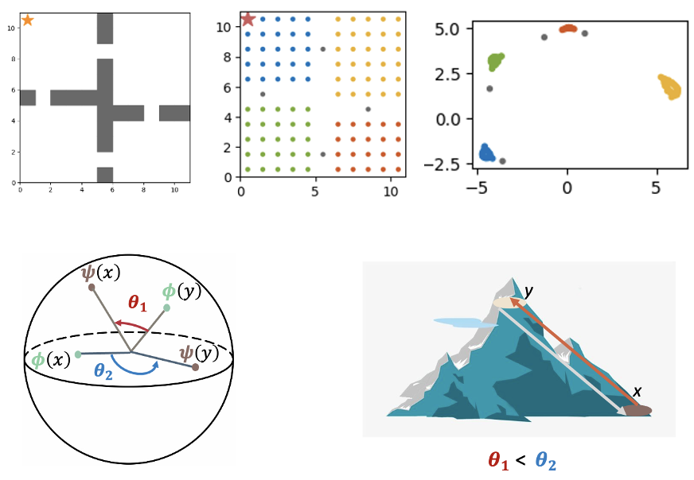

|
Meng Song
I completed my PhD at UC San Diego, where I was advised Prof. Manmohan Chandraker.
|

|
ResearchMy research is motivated by the goal of developing a mathematical construct of the intelligent agent from first principles. My recent work has primarily focused on answering the question "What is a good representation of states and goals in decision-making problems?" I explored this problem under three different learning paradigms: reinforcement learning, imitation learning, and unsupervised learning. |

|
Good Actions Succeed, Bad Actions Generalize: A Case Study on Why RL Generalizes Better
Meng Song Preprint, 2025 arXiv / code PPO and BC generalize differently in visual navigation: BC imitates successful trajectories, while PPO combinatorially stitches together past experiences, including failures, to solve new tasks and achieve stronger generalization. |

|
Towards Unsupervised Goal Discovery: Learning Plannable Representations with Probabilis-
tic World Modeling
Meng Song PhD Thesis, 2024 escholarship
Learning through interaction is a foundational principle in both human and animal learning.
In a broad sense, intelligent agents can be formulated as goal-directed systems
interacting with an uncertain environment.
|
|

|
Towards Unsupervised Goal Discovery: Learning Plannable Representations with Probabilis-
tic World Modeling
Meng Song Geometry-grounded Representation Learning and Generative Modeling Workshop at International Conference on Machine Learning (ICML), (Oral Presentation) arXiv A novel probabilistic world model trained with contrastive learning. The learned latent space enables subgoal discovery, asymmetric transition modeling, and supports highly efficient planning without requiring any inference-time search. |
|
|
A Minimalist Prompt for Zero-Shot Policy Learning
Meng Song Xuezhi Wang, Tanay Biradar, Yao Qin, Manmohan Chandraker Task Specification Workshop at The Robotics: Science and Systems (RSS), 2024 arXiv / code A novel prompting method that enables interpretable zero-shot generalization in unseen robotics tasks without requiring demonstrations and surpasses few-shot baselines. |
|
|
RLPrompt: Optimizing Discrete Text Prompts with Reinforcement Learning
Mingkai Deng, Jianyu Wang, Cheng-Ping Hsieh, Yihan Wang Han Guo Tianmin Shu Meng Song Eric P. Xing Zhiting Hu Conference on Empirical Methods in Natural Language Processing (EMNLP), 2022 arXiv / blog RL-based prompt optimization approach outperforms a wide range of finetuning and prompting baselines on text classification and style transfer tasks. |
Miscellanea |
|
Template stolen from Jon Barron. |